LPA-WXED
Especificaciones:
| Sistema Operativo | Windows 10p Pro |
| Ram | 4GB |
| Particiones | DISCO DE 500 GB DINÁMIC TRES PARTICIONE Sistema 100 GB Datos 400GB |
| Nombre | LPA-WXED |
| Usuarios | Administrador/paso(Permisos de administrador) miadmin/paso(Permisos de administrador) alumno/paso |
| Configuración Red | IP:192.168.3.52/24 Mascara:255.255.255.0 Gatewat: 192.168.3.1 DNS:8.8.8.8 DNS Altenernativo: 8.8.7.7 |
Nombre, Procesador, Cantidad de RAM, Versión de Windows y Grupo de trabajo:
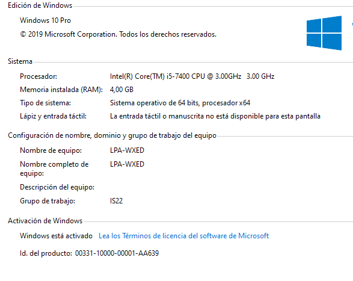
Particiones:
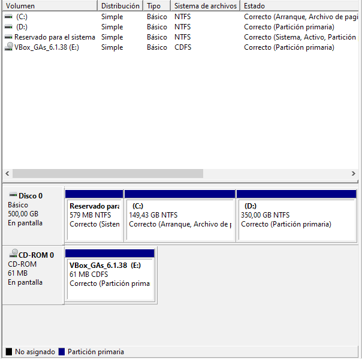
Usuarios y grupos:
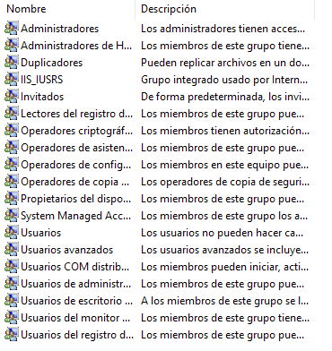 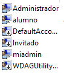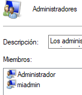
Configuración de red:

Netbeans
Preparativos de instalación:
Antes de instalar Netbeans hay que instalar java. Instalaremos la versión actual LST(La actual es la 19).
1º Vamos a la pagina de java y descargamos el instalador
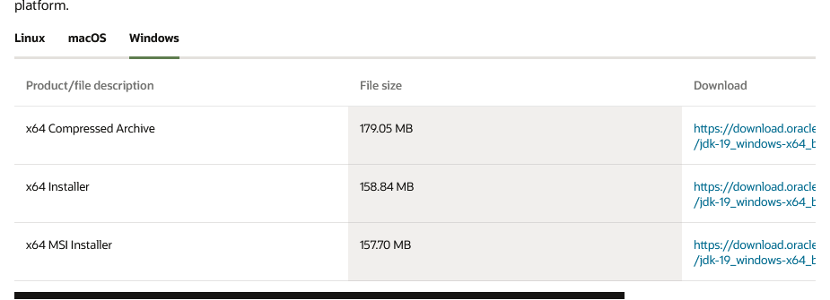
2º Ejecutamos el instalardor de JDK 19 e indicamos que lo queremos instalar en el disco duro C:
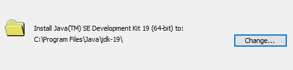
Instalación:
1º Descargamos de la pagina de NetBeans la versión LTS actual, ejecutamos el instalador e instalamos el NetBeans en el disco duro C:( Indicamos donde se ubica el JDK que queremos usar).
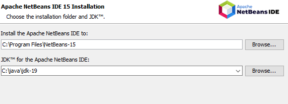
2º Dejamos el verificar automáticamente las actualizaciones al inicial NetBeans. Luego después la damos a instalar
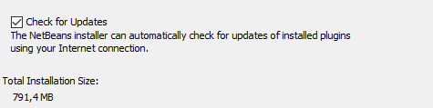
Configuración:
Auto-completar código:
Vamos a opciones de NetBeans>editor>code completion, seleccionamos HTML y marcamos que nos los autocompletar las aperturas de las etiquetas. Después aplicamos los cambios.
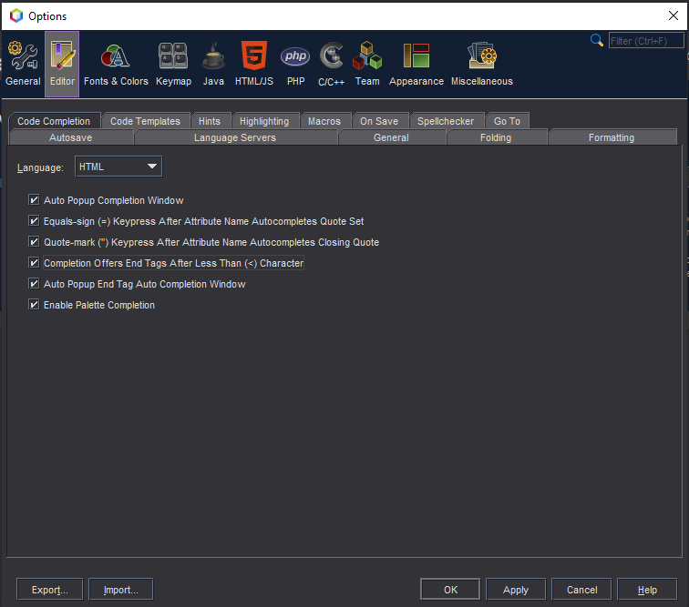
Xdebug:
Vamos a Tools>Options>PHP>Debugging, aqui se configura los parametros de la conexion con Xdebug:
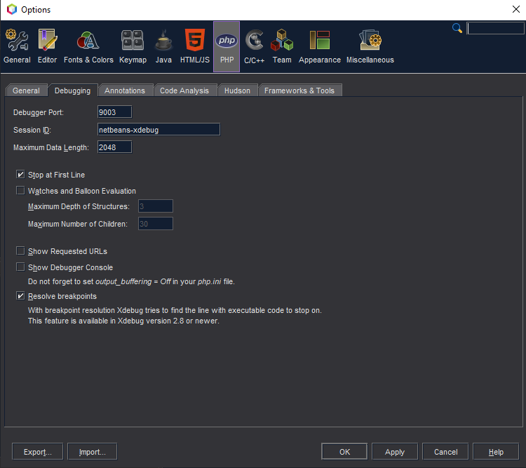
Vamos a Dejarlo por defecto.
Plugins:
Instalación:
1º Vamos a la pagina oficial de NetBenas, buscamos el plugin que nos interesa y le damos a la versión que tenemos de NetBeans.
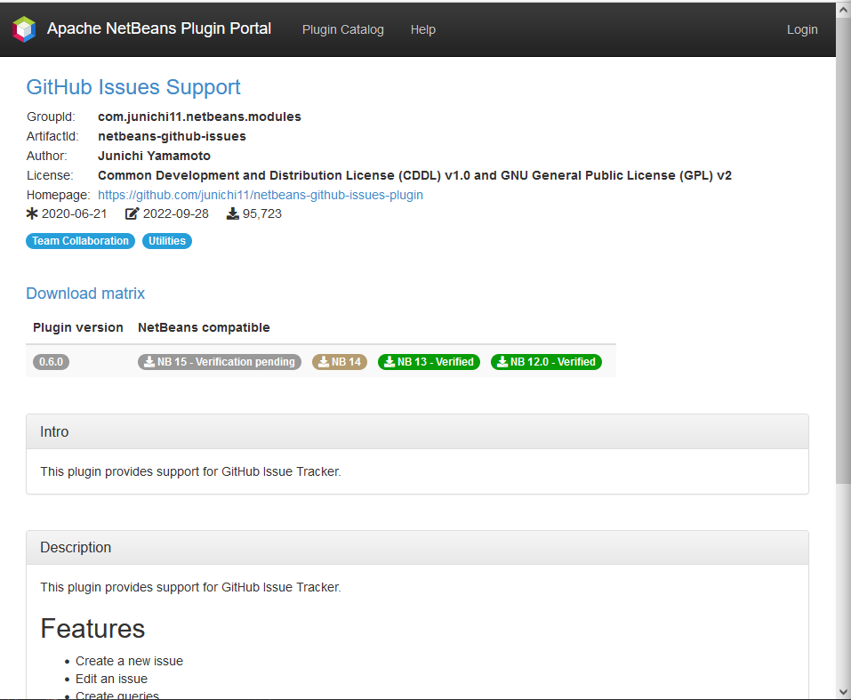
2º Vamos al NetBeans pulsamos en Tools>plugins>Downloaded, después le damos a Add plugins.
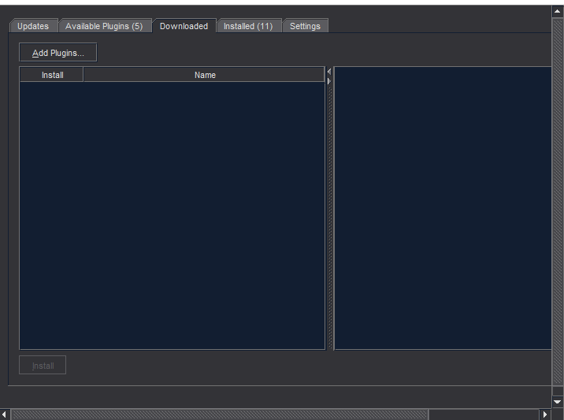
3º Después seleccionamos el archivo que hemos descargado de la pagina y le damos abrir
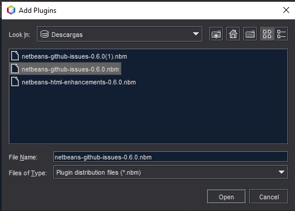
4º Seleccionamos el plugin y le damos a instalar.

5º Vamos al apartado de instalados y comprobamos que el en el apartado active el plugin esta verde con un check.
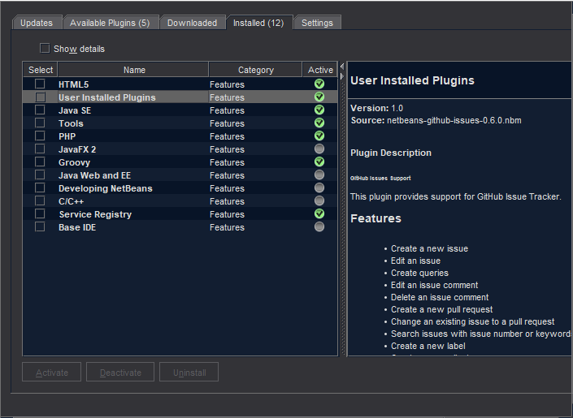
6º A disfrutar el plugin
Proyectos:
Simpre vamos a intentar separar los metadatos de netbeans del proyecto.
Proyecto en local:
1º Le damos a File>New Project
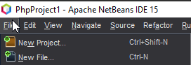
2º Como vamos a trabajar con PHP, creariemos un projecto PHP.
Le damos a PHP>PHP Application y le damos a next.
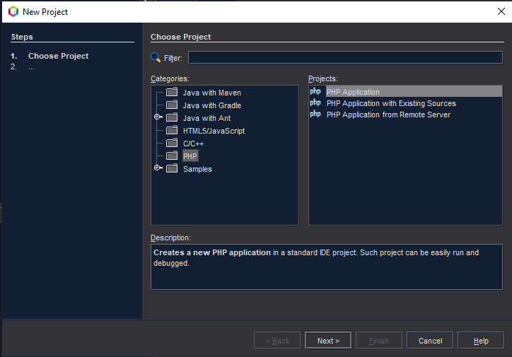
3º Ponemos el nombre del proyecto, en el PATH duplicamos a ultima carpeta /nombre/nombre(Esto lo hacemos para que en la primera este los metadatos y en la siguiente el proyecto), seleccionamos la versión de PHP, y selecionamos Put NetBeans metadata into a separate directory en el apartado Metadata Folder ponemos la ruta hasta la primera carpeta.
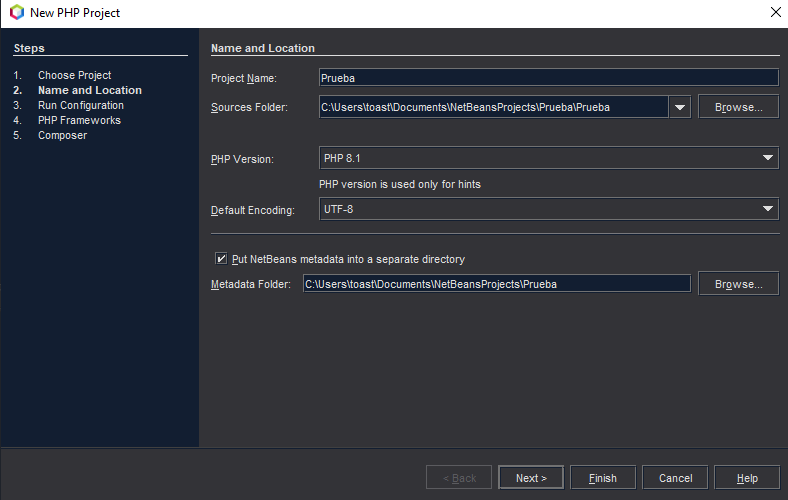
Luego le damos a next.
4º Ponemos la URL del archivo index(Recuerda la carpeta raiz es la primera carpeta).
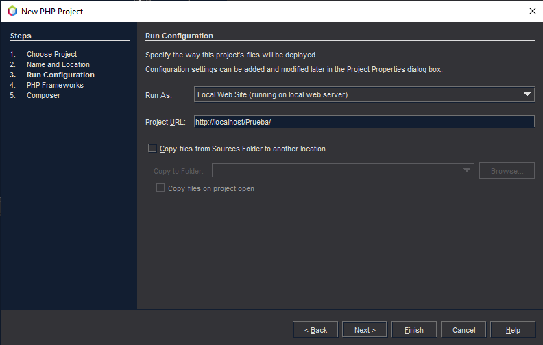
Luego le damos a next
5º En este apartado podemos Seleccionar un Framework, pero como no vamos a usar ninguno le damos a finish
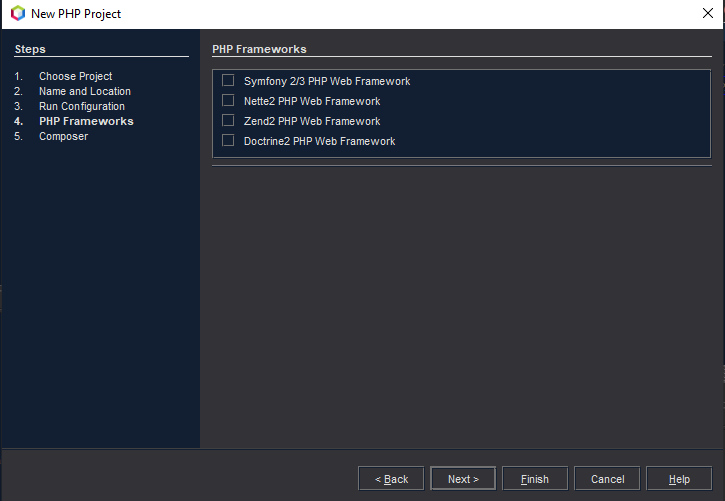
6º Comprobación de que se a creado correctamente.
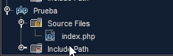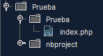
Crear un Projecto en Remoto:
1º Le damos a File>New Project
2º Como vamos a trabajar con PHP, creariemos un projecto PHP.
Le damos a PHP>PHP Application y le damos a next.
3º Ponemos el nombre del proyecto, en el PATH duplicamos a ultima carpeta /nombre/nombre(Esto lo hacemos para que en la primera este los metadatos y en la siguiente el proyecto), seleccionamos la versión de PHP, y selecionamos Put NetBeans metadata into a separate directory en el apartado Metadata Folder ponemos la ruta hasta la primera carpeta.
Luego le damos a next.
4º Vamos a crear La conexion remota para eso le damos a Manage.
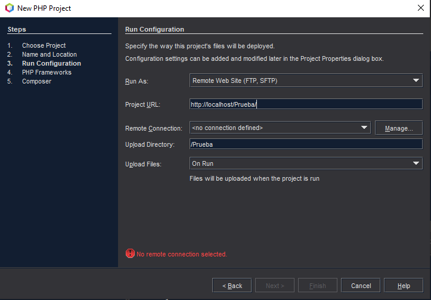
5º Nos saldra directamente Crear una nuevo conector. Le ponemos el nombre del conector y el typo(SFTP).
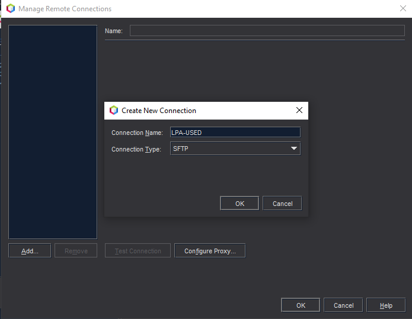
6º Configuramos el conector:
- Host Name: Ip o dominio del servidor
- User Name: Nombre del usuario con el que vamos a conectarnos
- Password: Contraseña de usuario
- Initial Directory: Directorio donde se van a subir los proyectos(Debe de ser propiedad del usuario)
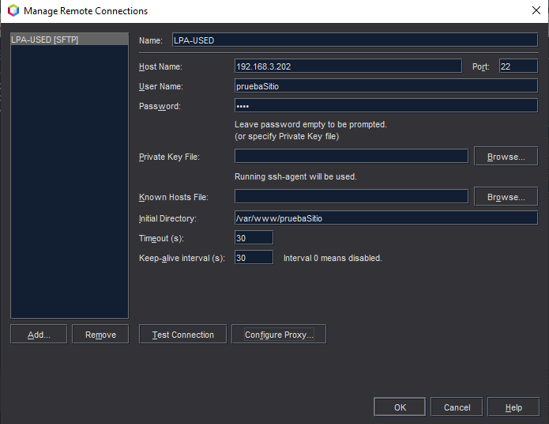
Luego de damos a Test y si no da ningun error le damos a OK.
7º Le ponemos la URL(ip servidor) al Index. Upload Directory es donde va a subir el proyecto.
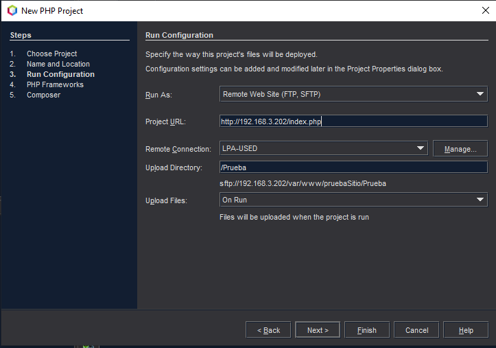
8º En este apartado podemos Seleccionar un Framework, pero como no vamos a usar ninguno le damos a finish.
9º Para que se cree en el servidor le damos en nuestro click derecho en Source Files de nuestro projecto y le damos a upload.
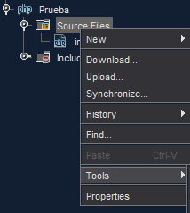
10º Comprobaciones de que se a creado:
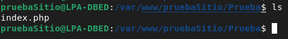
Debug:
Para Debugear PHP hay que configurar en el lado del servidor el Xdebug(Configuracion).
1º Colocamos en el archivo un break point, para colocaro le damos al numero de la linea y se pondra un cuadrado rojo.
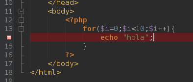
2º Para debugar nos posicionamos dentro del archivo y le damos a icono de Debug.
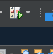
3º Moverse por dentro del archivo:
- Parar el debug.
- Continuar con la ejecución.
- Siguiente linea.
- Entrar (Se usa para entrar en una función).
- Salir (Se usa para entrar en una función).
Si dejamos el cursor encima de los iconos nos saldra los atajos de teclado.
4º Menu de Inspección e variables.
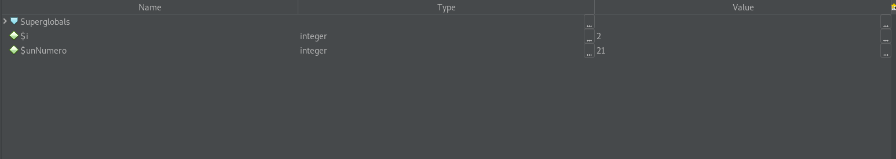
Nos muestra el nombre de la variables, el tipo de dato que contiene y el valor.
Si no nos sale la ventana de variables para abrirla vamos a window>debugging>variables o Alt+Mayus+1.
Conexion a Base de datos:
Antes de conectarnos a la base de datos tenemos que descargar el driver para java y añadirlo a NetBeans:
1º Vamos a esta pagina que contiene todas las versiones del conector de Mysql Enlace, selecionamos la version y dentor de la version le damos a descargar el jar.
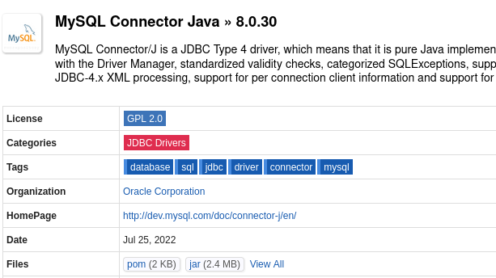
2º Vamos a NetBeans al apartado services, le damos click derecho a Drivers y le damos a new Driver
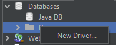
3º Le damos a add y seleccionamos el driver.jar que hemos descargado, el resto de la informacion se pone automaticamente.
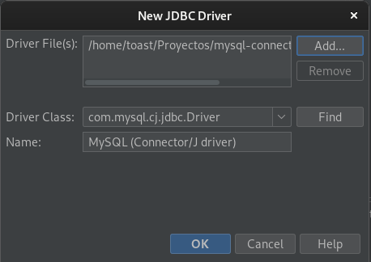
Le damos a OK y se abra añadido.
Creación de una conexión:
1º Le damos click derecho encima de Database y le damos a New Connection
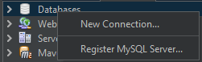
2º Seleccionamos el driver de Mysql:
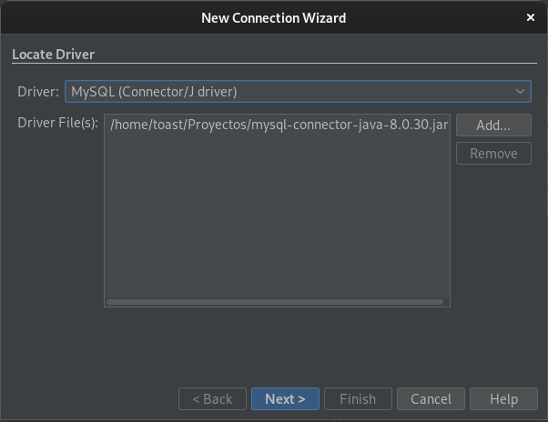
3º Rellenamos los siguientes apartados:
- Host: Ip o dominio del servidor(Obligatorio).
- Port: Puerto que usa la base de datos(Obligatorio).
- Database: La base de datos a la que nos vamos a conectar(Opcional).
- User Name: Usuario de la base de datos(Obligatorio).
- Password: Contraseña del usuario(Obligatorio).
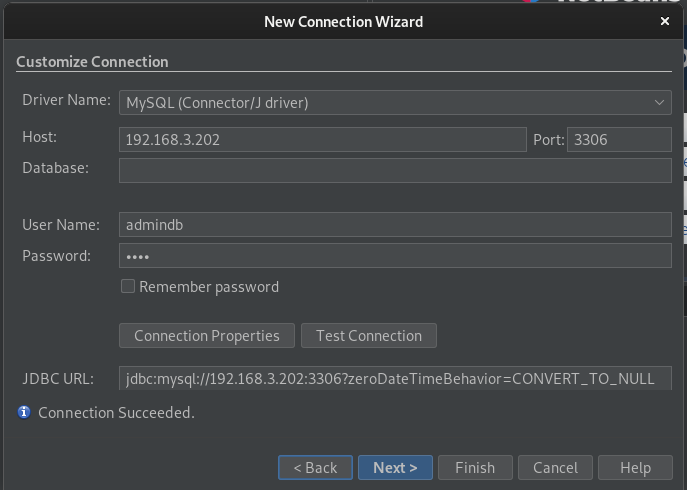
Luego le damos a Test Connection y si no da eeror le damos a finish.
Ejecución de un Query:
1º Le damos click derecho encima del conector y le damos a Execute Command
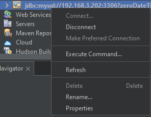
2º Dentro de documento SQL escribimos el quey.
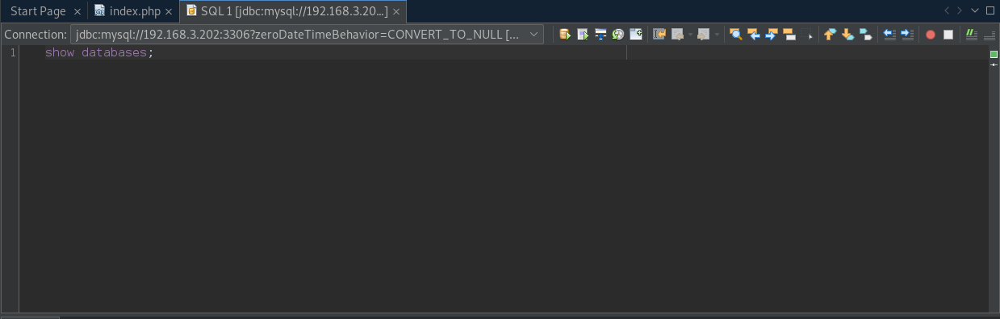
3º Luego le damos a Run SQL(Ctrl+Mayus+E) o si queremos ejecutar una cosa determina, seleccionamos la parte y luego click Derecho Run Selection.
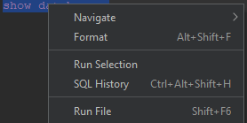
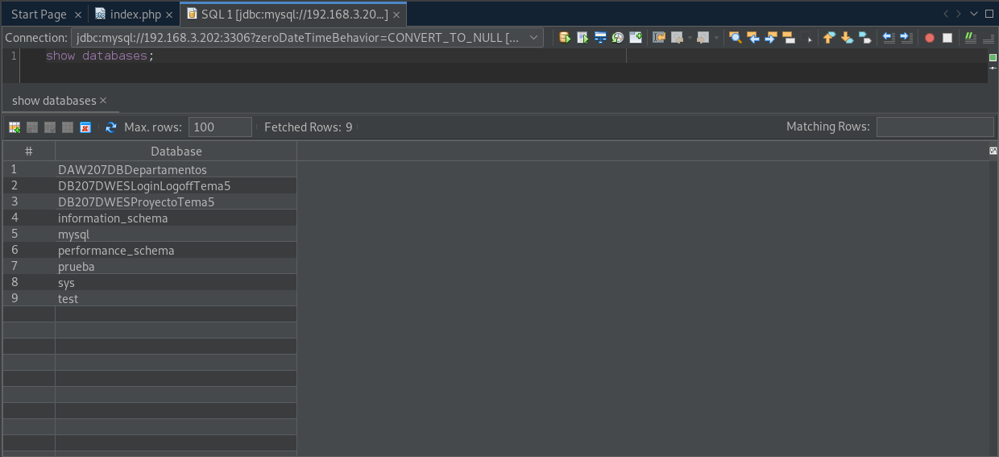
GIT:
Inicialización de un proyecto:
Le damos click derecho encima del proyecto Versioning>Initalize Git Repository
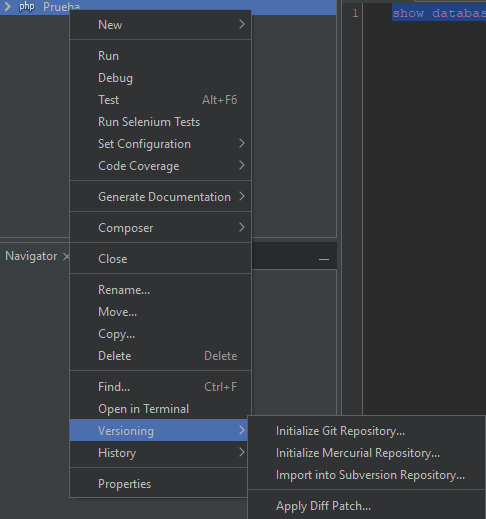
2º Seleccionamos donde se va a almacenar el .git.(Lo dejamos por defecto)
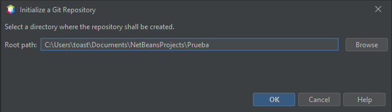
Commit
1º Le damos a click derecho encima del proyecto Git>Commit
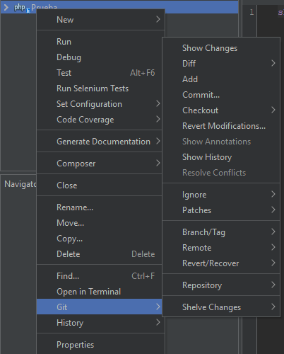
2º En esta pestaña podemos ver los cambios de archivos que va a contener el commit y el mensaje que va a tener el commit.
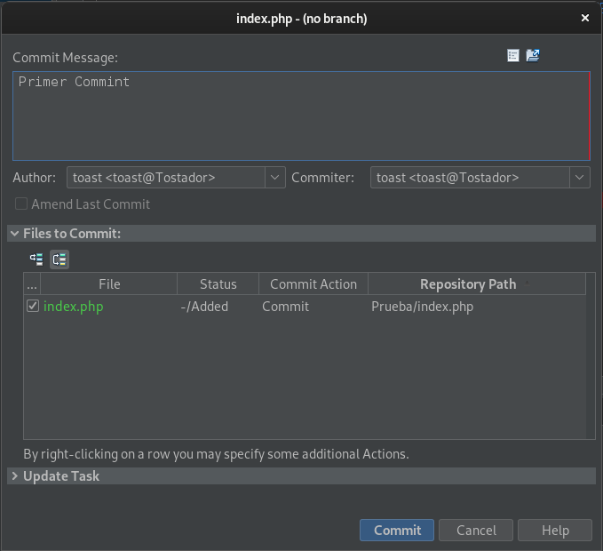
Para hacer el commit le damos a commit.
Si es el primer commit nos saldra este cartel, le tendremos que dar a si.(Es para poner el nombre del propietario del repositorio).
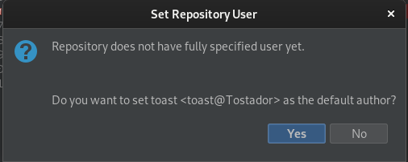
3º Para ver los commit que hemos echo, le damos click derecho encima del proyecto entramos en git y le damos a Show History.
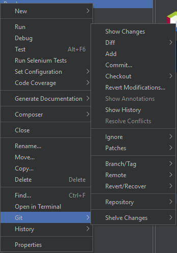
4º Veremos el historial de commit y si le damos encima del commit veremos los cambios que se hicieron.
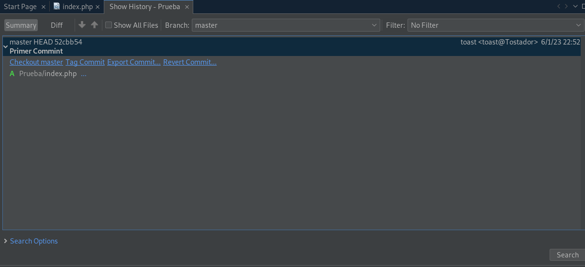
Colores de los archivos en git:
Verde: Archivo creado que no se encuentra en el respositorio.
Azul o Amarillo: Archivo modificado.
Rojo: Archivo elminado.
Reset
Es para volver a un commit anterior y los posteriores a ese commit se eliminaran.
1º Click derecho encima del proyecto Git>Revert/Recover>Reset.
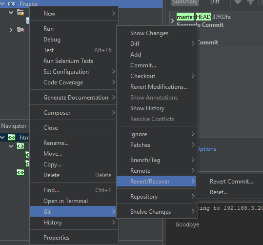
2ºLe damos a select(Para seleccionar al commit que vamos a donde volver).
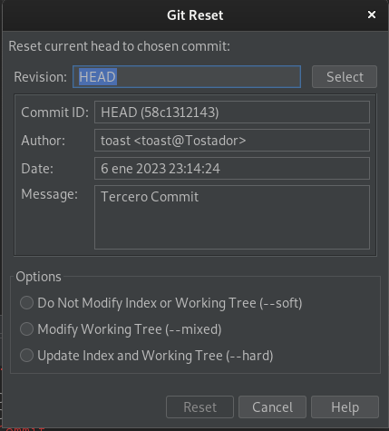
3º Seleccionamos el commit al cual vamos a volver.
4º Seleccionamos el tipo de Reset:
- –hard: Borrar todos los comits por delante del que has seleccionado y se borran los cambios. Cambia el puntero al commit seleccionado.
- –mixed: Borra el comit pero los cambios se quedan, es como desacer un commit. Cambia el puntero al commit seleccionado.
- –soft: No borra nada solo te mueve a ese commit.
Luego le damos a Reset.
5º Luego después vemos que el commit se a borrado.
Branch:
1º
2º
3º
4º
Checkout
1º
2º
LPA-UBED
Especificaciones:
| Sistema operativo | Ubuntu 22.01 |
| Memoria RAM | 2GB |
| Particiones | DISCO DE 500 GB DINÁMIC TRES PARTICIONE / 150 GB /swap 4GB /var 346GB |
| Nombre de la maquina | root/paso(Permisos de administrador) miadmin/paso(Permisos de administrador) operadorweb/paso |
| Configuración de red | IP:192.168.3.202/24 Mascara: 255.255.255.0 Gatewat: 192.168.3.1 DNS:8.8.8.8 |
Nombre de la maquina:
Versión:
Particiones:
Usuarios:
Configuración de red:
Apache
Instalación:
Para instalar apache es:
sudo apt-get install -y apache2
sudo apt-get install -y apache2Configuración:
Configuración de Server Name:
Editamos /etc/apache2/apache2.conf, añadimos al final ServerName nombreServidor.
Configuración de sitios virtuales:
Los sitios virtuales sirven para que en un servidor podamos tener varias paginas web separadas unas de otras. Se recomienda crear un usuario por cada sitio virtual y que este en el grupo www-data. Y ademas que este enjaulado (Se explica en el apartado SSH -Enjaula miento del usuario).
1º Creamos el usuario con la carpeta home en /var/www y que este en el grupo www-data.
2º Vamos a /etc/apache2/sites-available/ y copiamos el archivo 000-default.conf cambiándole el nombre
3º Entramos y editamos el archivo
VirtualHost: Podemos configurar el acceso a la pagina web
- IP: Podemos indicar la ip por la que podemos entrar a la pagina web(Tiene que se la ip del servidor o una de las puertas). Si ponemos el * pueden entrar por cualquier ip del servidor.
- puerto: Podemos indicar el puerto de acceso si queremos cambiarlo ponemos el nuevo puerto y vamos al ports.conf y añadimos
Listen Puerto - dominio: Si tenemos configurado el DNS podemos ponerl el nombre del dominio.
DocumentRoot: Colocamos la direción del nuevo sitio virtual.
Despues de configurar el sitio hacemos un sudo apache2ctl configtest para comprobar que la configuración esta bien.
3º Activamos el sitio virtual con sudo a2ensite nombre_del_.conf
Despues reiniciamos apache con sudo apache2ctl restart
4º Comprobamos que esta activado el sitio mirando en la carpeta /etc/apache2/sites-enabled
Configuración de .htaccess:
El archivo .htaccess es para poder configurar cosas en el sitio virconfiguracionphptual sin tocar el archivo .conf para activarlo tenemos que hacer lo siguiente.
1º Vamos a /etc/apache2 y editamos el apache2.conf

Dentro buscamos esta apartado y cambiamos el None por All.
2º Despues dentro del la carpeta del sitio creamos un .htaccess
Si creamos el archivo .htaccess dentro de una carpeta afectara a la carpeta y a sus hijos, nietos…
Configuración de Codigos de Errores:
Dentro de .htaccess añadimos:
ErrorDocument codigo_Error acción Accion: "texto" - [Comprobaciones](#Comprobacionesph) /ruta/a/un/HTML.html
ErrorDocument codigo_Error acción
Accion:
"texto" - [Comprobaciones](#Comprobacionesph)
/ruta/a/un/HTML.htmlConfiguración de Alias:
Los alias nos sirve para poder usar elementos fuera del sitio virtual.
1º Para configurar los tenemos que ir /etc/apache2/mods-enabled y editar alias.conf.
Alias /alis/ "/direcion/del/recurso"
<Directory "/direcion/del/recurso>
Options FollowSymlinks Indexes
AllowOverride None
Require all granted
</Directory>Alias /alis/ "/direcion/del/recurso"
<Directory "/direcion/del/recurso>
Options FollowSymlinks Indexes
AllowOverride None
Require all granted
</Directory>Configuración de Re direcciones:
1º Activamos el mod de apache rewrite y posteriormente reiniciamos apache:
2º Vamos a archivo .htacces y
Redirect [Status] [URL-path] url Status: 301: Redireccion permanente. 302: Redireccion temporal. Sirve para cuando un navegador indexa la pagina la redirecion la indexe o no(Si es permanente la indexa si es temporal no la indexa). Readirect 302 /google https://www.google.es
Redirect [Status] [URL-path] url
Status:
301: Redireccion permanente.
302: Redireccion temporal.
Sirve para cuando un navegador indexa la pagina la redirecion la indexe o no(Si es permanente la indexa si es temporal no la indexa).
Readirect 302 /google https://www.google.esHTTPS:
1ºGeneramos la clave privada con el siguiente comando:
sudo openssl genrsa 2048 > operdadorweb.key
sudo openssl genrsa 2048 > operdadorweb.key2ºGenereamos la clave publica:
- Country Name (2 letter code) []: (ES in Spain for example) State or Province Name (full name) [Some-State]: (your state or province name, name of your departament in Spain)
- Locality Name (eg, city) []: (the name of your city)
- Organization Name (eg, company) []: (your organization name) Preferente en mayúsculas.
- Organizational Unit Name (eg, section) []: (do not fill - advised - or enter a generic term such as “IT Department”.)
- Common Name (eg, YOUR name) []: (domain name/ server name/FQDN is the name of the website to be secured) No admite espacios en lanco.
- Email Address []: (let blank)
openssl req -new -key operdadorweb.key >operadorweb.csr
openssl req -new -key operdadorweb.key >operadorweb.csr3ºFirmamos el certificado:
openssl x509 -req -days 356 -in operadorweb.csr -signkey operadorweb.key -out operadorweb.crt
openssl x509 -req -days 356 -in operadorweb.csr -signkey operadorweb.key -out operadorweb.crt4ºMover los siguiente archivos:
.key lo movemos a /etc/ssl/private/
.crt lo mevemos a /etc/ssl/certs/
sudo cp operadorweb.key /etc/ssl/private/ sudo cp operadorweb.crt /etc/ssl/certs/
sudo cp operadorweb.key /etc/ssl/private/
sudo cp operadorweb.crt /etc/ssl/certs/5ºCambiamos el propietario del certificado y la cabe publica root:ssl-cert y persimos 640.
sudo chmod 640 /etc/ssl/private/operadorweb.key sudo chmod 640 /etc/ssl/certs/operadorweb.crt
sudo chmod 640 /etc/ssl/private/operadorweb.key
sudo chmod 640 /etc/ssl/certs/operadorweb.crt6ºVamos a activar el modulo ssl en apache para poder usar los certificados.
sudo a2enmod ssl
sudo a2enmod ssl7º Vamos a /etc/apache2/sites-available, y clonamos default-ssl.conf
sudo cp default-ssl.conf operadorwebssl.conf
sudo cp default-ssl.conf operadorwebssl.conf8º Modificamos el archivo clonado con las siguientes directivas:
- SSLCertificateFile: Tenemos que poner la ruta al .crt
- SSLCertificateKeyFile: Se pone la ruta al .key
- SSLEngine: tiene que estar on
- ServerAdmin: correo electrónico del administrador del sitio
- ServerName: dominio del sitio
- DocumentRoot: Donde se encuentra la pagina web
9ºAbrimos el puerto 443.
sudo ufw allow 443
sudo ufw allow 44310ºActivamos el sitio.
sudo a2ensite operadorwebssl.conf
sudo a2ensite operadorwebssl.conf11ºComprobamos que funciona:
Nos saldrá el candado con un símbolo de peligro, porque el certificado no es una entidad de cerficiados de confianza.
Redicrecion de HTTP a HTTPS:
1º Tenemos que activar el modulo rewrite de apche:
sudo a2enmod rewrite
2º Creamos .htaccess en el la carpeta del sitio virtaul y añadirmos lo siguiente:
RewriteEngine On
RewriteCond %{SERVER_PORT} 80
RewriteRule ^(.*)$ https://dominio o ip/$1 [R,L]RewriteEngine On
RewriteCond %{SERVER_PORT} 80
RewriteRule ^(.*)$ https://dominio o ip/$1 [R,L]Options +FollowSymLinks- es una directiva de Apache, requisito previo para mod_rewrite.RewriteEngine On- habilita mod_rewrite.RewriteCond %{SERVER_PORT} 80- sirve para indicar que todas las peticiones que se realicen al puerto 80 (puerto por defecto de Apache para servicio web), deseamos que vayan a través de la regla especificada.RewriteRule- define una regla particular.- Dentro de la regla de reescritura, la primera cadena de caracteres después de
RewriteRule, define lo que la URL original parece. - La segunda cadena después de
RewriteRuledefine la nueva URL. $1- Este carácter especial, sustituye (o indica) la parte entre paréntesis, especificada en la primera cadena. Básicamente, lo que haces es asegurar que las sub-páginas redireccionan a la misma sub-página y no a la página principal. Puede omitirlo para redirigir a la página principal. (Si usted no tiene el mismo contenido en el nuevo directorio que había en el antiguo directorio, deje esta expresión regular[R,L]- Esta opción, realiza una redirección, y también deshabilita que las reglas de reescritura que estén escritas después afecten a la dirección URL (una buena idea para añadir después de la última rewrite rule).
- Dentro de la regla de reescritura, la primera cadena de caracteres después de
Autentificación con Apache
El sitio daw201.luis.local/nttdata que solo tiene acceso los usuarios: jero/israel/imelda
1º Comprobamos que el modulo digest esta activado, en caso de que no este activado lo activamos:
sudo a2enmod auth_digest.
2ºCremos una carpeta en /var/www/daw201 que se llama data, luego le cambiamos el propietario a daw201:www-data
sudo mkdir data
sudo chown daw201:www-data data/
3º Creación del los usuarios usaremos el comando htdigest:
htdigest –c archivo_que_va_a_contener_los_usuarios grupo nombre -c es para crear el directorio, si ya existe lo rescribe y elimina los usuarios anteriores. Asi que cuando quieras añadir mas usuario no pongas -c
htdigest –c archivo_que_va_a_contener_los_usuarios grupo nombre
-c es para crear el directorio, si ya existe lo rescribe y elimina los usuarios anteriores.
Asi que cuando quieras añadir mas usuario no pongas -c4º Editamos el .htaccess del sitio o de la carpeta que vamos a restringir a la entrada.
En caso de que sea desde el sitio:
<Directory direcion>
Options Indexes FollowSymLinks
AuthType Digest
AuthName “dominio-ninja”
AuthDigestProvider file
AuthUserFile /etc/apache2/digest
Require valid-user
</Directory><Directory direcion>
Options Indexes FollowSymLinks
AuthType Digest
AuthName “dominio-ninja”
AuthDigestProvider file
AuthUserFile /etc/apache2/digest
Require valid-user
</Directory>En caso de que sea desde el .htacces de la carpeta:
Options Indexes FollowSymLinks AuthType Digest AuthName “domino o UserName” AuthDigestProvider file AuthUserFile /etc/apache2/digest Require valid-user
Options Indexes FollowSymLinks
AuthType Digest
AuthName “domino o UserName”
AuthDigestProvider file
AuthUserFile /etc/apache2/digest
Require valid-user5º Cuando entremos al sito nos pedirá el usuario y la contraseña.
Creación de grupos en digest :
1º Activamos el modulo authz_groupfile
sudo a2enmod authz_groupfile
sudo a2enmod authz_groupfile2ºCreamos un archivo dentro de data que va a a contener los grupos, el archivo tiene que tener el siguiente patron:
nombreGrupo: nombreUsuario1 nombreUsuario2 ...
nombreGrupo: nombreUsuario1 nombreUsuario2 ...3º
PHP
Instalación:
Para instalar PHP es:
Si no ponemos versión nos instalara la LTS
sudo apt-get install -y php
sudo apt-get install -y phpSi queremos instalar una version en concreto:
sudo apt-get install -y phpX.X sudo apt-get install -y php8.1
sudo apt-get install -y phpX.X
sudo apt-get install -y php8.1Configuración:
1º Vamos al directorio /etc/php/X.X/apache2, dentro de php.ini tenemos que editar o des-comentar lo siguiente:
php.ini: Es el archivo de configuración de PHP
| Desarrollo | Producción | |
| file-uploads = On allow-url-fopen = On memory-limit = 256M upload-max-filesize = 100M max-execution-time = 360 date.timezone = Europe/Madrid |
file-uploads = On allow-url-fopen = On memory-limit = 256M upload-max-filesize = 100M max-execution-time = 360 date.timezone = Europe/Madrid |
|
| Errores | display-errors = On display-startup-errors = On |
display-errors = Off display-startup-errors = Off |
2º Reiniciamos el servicio apache:
sudo service apache2 restart
sudo service apache2 restart3º En el caso de que sea menor de la versión 8.0 tenemos que descargar
sudo apt install -y libapache2-mod-phpX.XConfiguraci%C3%B3nph
sudo apt install -y libapache2-mod-phpX.XConfiguraci%C3%B3nphy activarlo en apache.
sudo a2enmod phpX.X
sudo a2enmod phpX.XComprobaciones:
En el proyecto remoto creamos un index.php y lo abrimos
Ver información de PHP:
En el fichero PHP ponemos phpinfo() y lo ejecutamos:
Nos da información sobre todo(configuración, parámetros, módulos instalados)
Xdebug:
Instalación:
Para instalarlo lo hacemos de la siguiente forma:
sudo apt-get install php-xdebug
sudo apt-get install php-xdebugConfiguración:
1º Para configurarlo tenemos que editar el fichero /etc/php/8.1/apache2/conf.d/20-xdebug.ini y añadir lo siguiente en el archivo:
xdebug.discover_client_host=1 xdebug.remote_autostart=on xdebug.start_with_request = yes xdebug.mode=debug xdebug.client_host=127.0.0.1 xdebug.client_port=9003 xdebug.idkey="netbeans-xdebug" zend_extension=xdebug.so xdebug.mode=develop,debug xdebug.discover_client_host=1 xdebug.remote_autostart=on xdebug.start_with_request = yes xdebug.client_host=127.0.0.1 xdebug.client_port=9003 xdebug.idkey="netbeans-xdebug"
xdebug.discover_client_host=1
xdebug.remote_autostart=on
xdebug.start_with_request = yes
xdebug.mode=debug
xdebug.client_host=127.0.0.1
xdebug.client_port=9003
xdebug.idkey="netbeans-xdebug"
zend_extension=xdebug.so
xdebug.mode=develop,debug
xdebug.discover_client_host=1
xdebug.remote_autostart=on
xdebug.start_with_request = yes
xdebug.client_host=127.0.0.1
xdebug.client_port=9003
xdebug.idkey="netbeans-xdebug"2º Despues aplicar los cambios debemos reiniciar el servicio de apache2:
sudo service apache2 restart
sudo service apache2 restart3º Abrimos en el cortafuegos el puesto 9003:
sudo ufw allow 9003
sudo ufw allow 9003luego lo comprobamos con:
sudo ufw status
sudo ufw statusSSH:
Enjaula miento del usuario:
Enjaular un usuario se usa para que un usuario no pueda moverse por todo el sistema de ficheros sino por donde el administrador decida.
1º Debemos cambiar el propietario a root(o por otro usuario, pero el grupo tiene que ese si o si distinto) de la carpeta home del usuario que vamos a enjaular.
2º Eliminamos los permisos de escritura del directorio home del usuario.
3º Dentro del directorio home del usuario creamos una carpeta que es a la cual tendra el acceso y tendra todos los permisos.
4º Ponemos de popietario al usuario enjaulado, grupo www-data(O el respectivo grupo que decidamos) y los permisos 2775.
5º Vamos a editar el archivo sshd_config que se encuantra en /etc/ssh/, comentamos Subsystem sftp /usr/lib/openssh/sftp-server y escribimos Subsystem sftp internal-sftp.
6º Luego añadimos esto:
Match User daw1 ChrootDirectory %h ForceCommand internal-sftp -u 2 AllowTcpForwarding yes PermitTunnel no X11Forwarding no
Match User daw1
ChrootDirectory %h
ForceCommand internal-sftp -u 2
AllowTcpForwarding yes
PermitTunnel no
X11Forwarding noSi queremos enjaular a un grupo ponemos Match Group nombre o si queremos enjaular a un unico usuario Match User usuario.
Comprobaciones:
Nos conectamos con filezilla al usuario enjaulado y nos debera salir solo las carpetas dentro del directorio Home.
Solo nos aparece la carpeta dentro del home del usuario.
Tambien pondemos intentar conectarnos por ssh al servidor con el usuario enjaulado y nos dara un error
Mysql:
Instalación:
sudo apt install mysql-server-8.0
sudo apt install mysql-server-8.0Configuración:
Acceso al servidor desde fuera:
1º Vamos a /etc/mysql/mysql.conf.d y entramos dentor de mysqld.cnf.
2º Buscamos con Ctrl+w bind-address(Esta directiva nos indica desde donde nos podemos conectar remotamente) la comentamos, guardamos y cerramos el archivo.
3º Reiniciamos el servicio.
4º Abrimos el puerto 3306 para poder acceder.
5º Despues creamos una usuario remote dentro de la base de datos y ya podremos acceder remotamente.
DNS
Intatalacion de bind:
El paquete que tenemos que instalar es bind9
1º Comprobamos que no esta instalado el paquete dpkg -s bind9
2º Actualizamos repositorios sudo apt-get update
3º Instalamos sudo apt-get install bind9
4º Despues abrimos el puerto 53 UDP y TCP sudo ufw allow 53
Control del servicio
Comprobar el estado del servicio sudo service bind9 status
Arrancar el servicio sudo service bind9 start
Parar el servicio sudo service bind9 stop
Reiniciar el servicio sudo service bind9 restart
Estructura de directorios y archivos de configuración de bind9
- /etc/bind/named.conf es un fichero de configuración global
- /etc/bind/named.conf.options: especifica las opciones generales para el funcionamiento de bind
- /etc/bind/named.conf.local: Fichero de configuracion de una zona
- /etc/bind/named.conf.default.zone: Contiene la definición de las zonas por defecto para la instalación, que contiene entre otras cosas las definición de localhost
- /etc/bind/db: ficheros con definiciones de las zonas que ha instlado Ubuntu.
Cambiar la configuración de red del servidor DNS y sufijo-DNS
Para cambiar la configuración del servidor vamos a /etc/netpla/ y editamos con
sudo nano archivo por defecto o archivo de la tarjeta principal
Para aplicar los cambiar lo hacemos con
sudo netplan apply
IP Creación de una zona directa:
1º Editamos el fichero /etc/bind/named.conf.local
zone "luis.local" { type master; file "/etc/bind/db.luis.local"; };zone "luis.local" { type master; file "/etc/bind/db.luis.local"; };Chequear los ficheros de configuración sudo named-checkconf nombre_fichero o Chequea todos los ficheros del servicio
sudo named-checkconf
2º Crear el fichero que contiene los RR (/etc/bind/db.luis.local) Nota. @ equivale al nombre del dominio
;
; BIND data for luis.local
;
$TTL 604800
@ IN SOA lpa-used.luis.local. luis.perast.educa.jcyl.es. (
1 ; Serial
604800 ; Refresh
86400 ; Retry
2419200 ; Expire
3600 ) ; Negative Cache TTL
;
@ IN NS lpa-used.luis.local. ; Registros Host
@ IN A 192.168.3.202
lpa-used IN A 192.168.3.202
; Registros Alias
daw201 IN CNAME lpa-used.luis.local.
daw202 IN CNAME lpa-used.luis.local.
daw203 IN CNAME lpa-used.luis.local.
daw204 IN CNAME lpa-used.luis.local.;
; BIND data for luis.local
;
$TTL 604800
@ IN SOA lpa-used.luis.local. luis.perast.educa.jcyl.es. (
1 ; Serial
604800 ; Refresh
86400 ; Retry
2419200 ; Expire
3600 ) ; Negative Cache TTL
;
@ IN NS lpa-used.luis.local. ; Registros Host
@ IN A 192.168.3.202
lpa-used IN A 192.168.3.202
; Registros Alias
daw201 IN CNAME lpa-used.luis.local.
daw202 IN CNAME lpa-used.luis.local.
daw203 IN CNAME lpa-used.luis.local.
daw204 IN CNAME lpa-used.luis.local.Chequear el fichero de zona
sudo named-checkzone Nombre_Zona fichero_contiene_RR
Después reiniciamos el servicio
Para ver si funciona:
Con nslookup haber si resuelve luis.local o lpa-used.luis.local
Creación de alias o CNAME
Esto tiene que ir en el fichero db.tunombre.local
ALIAS IN CNAME FQDN_MAQUINA(Nombre absoluto xxxus20x.tunombre.local.)
ALIAS IN CNAME FQDN_MAQUINA(Nombre absoluto xxxus20x.tunombre.local.)Ejemplo:
www IN CNAME xxxus20x.tunombre.local. ftp IN CNAME xxxus20x.tunombre.local.
www IN CNAME xxxus20x.tunombre.local.
ftp IN CNAME xxxus20x.tunombre.local.Zona de resolución inversa
En la zona inversa resuelve la ip por el nombre.
Vamos a configurar para la red 192.168.3.0/24, la zona se llama 3.168.192.in-addr.arpa Para declarar la zona tenemos que editar el fichero /etc/bind/named.conf.local añadimos
zone “3.168.192.in-addr.arpa”{
type master;
file “/etc/bind/db.3.168.192.in-addr.arpa”;
};zone “3.168.192.in-addr.arpa”{
type master;
file “/etc/bind/db.3.168.192.in-addr.arpa”;
};Chequear los ficheros de bind9: sudo named-checkconf /etc/bind/named.conf.local O bien, sudo named-checkconf
Para la creación de la zona inversa nos hacemos opoyo de la zona directa:
sudo cp /etc/bind/db.tunombre.local /etc/bind/db.20x.168.192.in-addr.arpa
Editamos el fichero que acabamos de copiar con las siguientes pautas:
- Todos los registros
Alos cambiamos porPTR. - Retiramos todos los registros
CNAME. - Cambiamos el dominio por la ip(parte host) dentro de los registros NS y PTR. Y las ip por el dominio correspondiente.
;
; BIND data file for db.3.168.192.in-addr.arpa
;
$TTL 604800
@ IN SOA lpa-used.luis.local. luis.peras.educa.jcyl.es. (
1 ; Serial
604800 ; Refresh
86400 ; Retry
2419200 ; Expire
3600 ) ; Negative Cache TTL
;
@ IN NS lpa-used.luis.local.
202 IN PTR luis.local.
202 IN PTR lpa-used.luis.local.;
; BIND data file for db.3.168.192.in-addr.arpa
;
$TTL 604800
@ IN SOA lpa-used.luis.local. luis.peras.educa.jcyl.es. (
1 ; Serial
604800 ; Refresh
86400 ; Retry
2419200 ; Expire
3600 ) ; Negative Cache TTL
;
@ IN NS lpa-used.luis.local.
202 IN PTR luis.local.
202 IN PTR lpa-used.luis.local.Ahora chequeamos la zona: Sudo named-checkzone 3.168.192.in-addr.arpa /etc/bind/db.3.168.192.in-addr.arpa
Después reiniciamos el servicio Sudo service bind9 restart
Para ver si funciona:
Con nslookup haber si resuelve 192.168.3.202
Reenviar peticiones DNS:
Es nuestro servidor DNS le vamos a indicar la IP de otros servidores DNS para que reenvié las consultas que no es capaz de resolver . 1ºEditamos el fichero /etc/bind/named.conf.options
2º Dentro de forwarders metemos las ip de los servidores DNS terminado con ;
options {
directory "/var/cache/bind";
// If there is a firewall between you and nameservers you want
// to talk to, you may need to fix the firewall to allow multiple
// ports to talk. See http://www.kb.cert.org/vuls/id/800113
// If your ISP provided one or more IP addresses for stable
// nameservers, you probably want to use them as forwarders.
// Uncomment the following block, and insert the addresses replacing
// the all-0's placeholder.
forwarders {
8.8.8.8;
8.8.4.4;
};
//========================================================================
// If BIND logs error messages about the root key being expired,
// you will need to update your keys. See https://www.isc.org/bind-keys
//========================================================================
dnssec-validation auto;
listen-on-v6 { any; };
};options {
directory "/var/cache/bind";
// If there is a firewall between you and nameservers you want
// to talk to, you may need to fix the firewall to allow multiple
// ports to talk. See http://www.kb.cert.org/vuls/id/800113
// If your ISP provided one or more IP addresses for stable
// nameservers, you probably want to use them as forwarders.
// Uncomment the following block, and insert the addresses replacing
// the all-0's placeholder.
forwarders {
8.8.8.8;
8.8.4.4;
};
//========================================================================
// If BIND logs error messages about the root key being expired,
// you will need to update your keys. See https://www.isc.org/bind-keys
//========================================================================
dnssec-validation auto;
listen-on-v6 { any; };
};3º Comprobamos el archivo con sudo named-checkconf
4º Reiniciamos el servicio Sudo service bind9 restart
Comprobación del funcionamiento:
Con nslookup haber si resuelve www.google.es o un dominio fuera de nuestro servidor